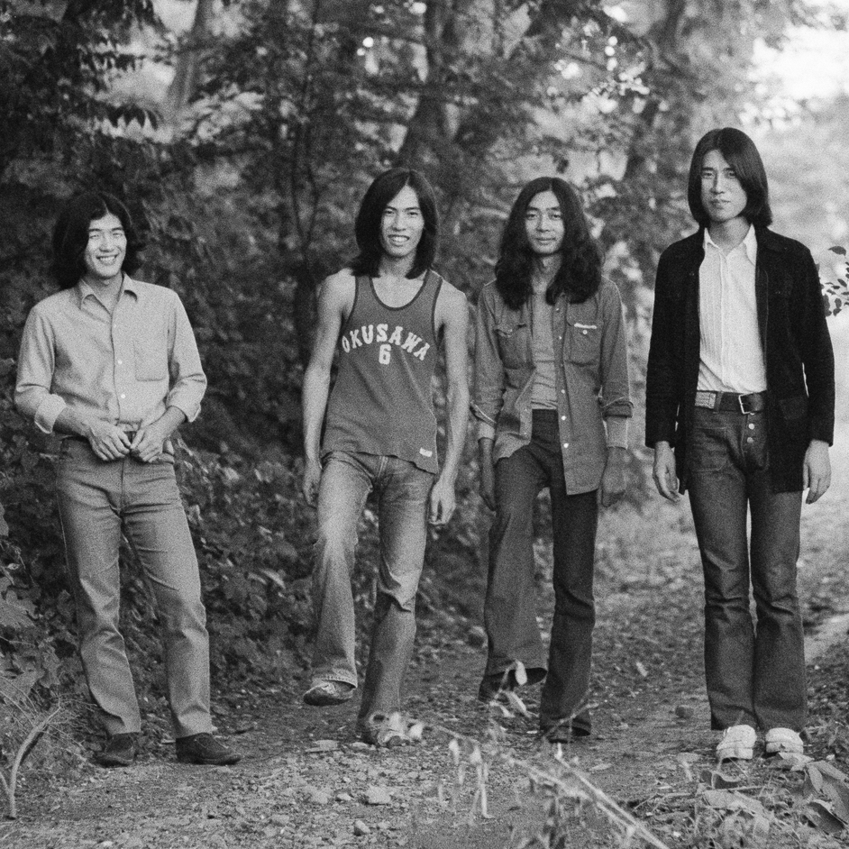

EARLY 70s
City pop was a popular trend in Japan from the late 70s to 80s. However, it is important to remember that there were already sources of city pop in the early 70s.
01 - Happy End はっぴいえんど

1970
Happy End はっぴいえんど
This is an iconic piece of Japanese rock music history. Happy End is a pioneering band that put Japanese lyrics on the rock sound. In terms of perfection, it's inferior to their second album, "Kaze Machi Roman 風街ろまん", but it has the freshness of a debut album. "Juuni Gatsu No Ame No Hi 12月の雨の日", this classic song is a must listen.
